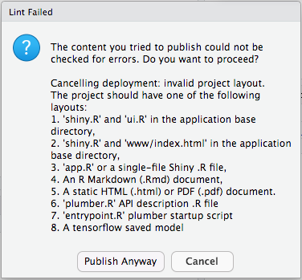
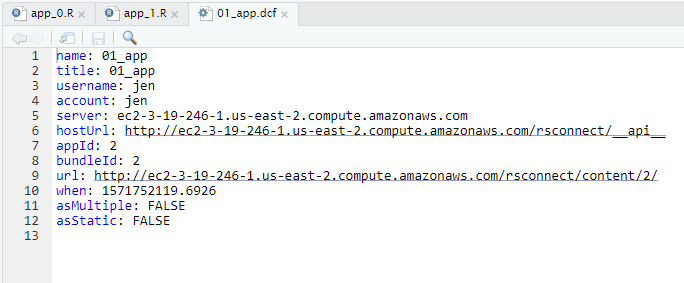

4.6 Lab: Using RStudio Connect
Task: Allow pop-ups in your browser
When you connect your IDE to Connect, a choreographed dance starts. During this dance you provide your Connect credentials to RStudio Server Pro.
The dance includes a pop-up window that is blocked by most modern browsers.
In the browser tab that contains RStudio Server, configure the browser to allow pop-ups from this site.
Video review:
Task: Connect your IDE to Connect
Use the "Global Options" menu in RStudio Server to configure a connection to your Connect instance. You need the host name or IP address.
RStudio
--> Tools
--> Global Options
--> Publishing
--> Connect
Enter: http://<host_name>/rsconnect

Video review:
Task: Copy the example apps
Perform this task from your SSH console
You can find the example apps for this classroom at /usr/share/class/pro_admin_training_assets
ls -l /usr/share/class/pro_admin_training_assets/
Your task is to copy these files to jen's home folder
Remember:
- Think carefully about where you are logged in as which user
- You are probably:
- logged in as
admin-userin SSH - logged in as
jenin RStudio Server Pro
- logged in as
So, with your permissions as the admin-user, you must copy the course files to the home folder of the RStudio Server user, and set the file ownership so that jen owns these files.
sudo cp -r /usr/share/class/pro_admin_training_assets/ /home/jen
sudo chown -R jen: /home/jen
Alternatively you can use the Terminal tab within RStudio Server, which provides you with a terminal session for user jen:
cp -r /usr/share/class/pro_admin_training_assets/ ~
ls -l /home/jen/pro_admin_training_assets/
total 92960
drwxr-xr-x 2 jen root 4096 Oct 22 11:42 00_app
drwxr-xr-x 2 jen root 4096 Oct 22 11:42 01_app
drwxr-xr-x 2 jen root 4096 Oct 22 11:42 02_app
drwxr-xr-x 2 jen root 4096 Oct 22 11:42 03_databases
drwxr-xr-x 2 jen root 4096 Oct 22 11:42 04_report
drwxr-xr-x 3 jen root 4096 Oct 22 11:42 05_api
drwxr-xr-x 2 jen root 4096 Oct 22 11:42 06_troubleshooting
-rw-r--r-- 1 jen root 199 Oct 22 11:42 README.md
-rw-r--r-- 1 jen root 795 Oct 22 11:42 _prereqs.R
-rw-r--r-- 1 jen root 289 Oct 22 11:42 answer.txt
-rw-r--r-- 1 jen root 95123524 Oct 22 11:42 babynames.csv
-rw-r--r-- 1 jen root 248 Oct 22 11:42 config.txt
-rw-r--r-- 1 jen root 229 Oct 22 11:42 pro_admin_training_assets.Rproj
-rw-r--r-- 1 jen root 847 Oct 22 11:42 rstudio-session-sssd
-rw-r--r-- 1 jen root 471 Oct 22 11:42 rstudio-sssd
-rw-r--r-- 1 jen root 1313 Oct 22 11:42 s-answer.txt
-rw-r--r-- 1 jen root 1258 Oct 22 11:42 s-template.txt
Task: Deploy app_0
Now open RStudio Server Pro and navigate to ~/pro_admin_training_assets in the files tab (where you are logged in as jen)

Do the following
- Navigate to
00_appand openapp_0.R - You may get a ribbon that says "shiny is required but not installed"
- If you get this banner, click to install the
shinypackage.
- If you get this banner, click to install the

-
Click the "Run App" button

-
Does the app run locally?

-
Close the app and return to the code pane
-
Find the "publish" button in the upper-right hand corner of the code pane:

-
Click the
publish appbutton
-
Publish the app to Connect
/publish_app_0.png)
While the app deploys, observe:
- How long does it take?
- Can you see what happens?
After deployment to Connect:
- Does the app run in Connect?
Deployment failure?
If you get the following error message during publication, you've clicked the "wrong" publishing button.

It is possible to publish apps in several ways from the IDE:
- From the code pane:
- This method is reliable, and works for any document, regardless of what file name you gave the document (app or report).
- From the running shiny app pane:
- This method only work in special cases.
- Specifically, it assumes you named your shiny app
app.R.
So, to fix this problem, use the publish button in the code pane.
Explore the content settings panel
After successful deployment, a new browser tab will open, with your running Connect app.
Notice that as the publisher you can change some settings for your newly deployed app.
In the top right hand corner of the Connect screen you will see a ribbon of action buttons:

Explore each of these action buttons:
- Info provides usage stats for the previous 30 days, and allows you to upload a cover image for the content
- Access allows you to change access control and edit the custom URL
- Runtime lets you scale a Shiny app to multiple processes (in parallel)
- Schedule allows you to run a Report at scheduled times (not applicable for apps)
- Vars let's you change environment variables
- Logs displays the deployment log and any errors
For more help, refer to the Connect user guide.
Task: Deploy app_1
Run and deploy app_1
Now for a more complex example
- Navigate to
01_appand openapp_1.R - Select "Run App"
- Does the app run locally?

- Close the running app
- Click the "publish" button in the code pane to deploy the app to Connect.
While the app deploys, observe:
- Can you see what happens?
- Observe the "Deploy" pane in RStudio Server Pro:

- Specifically, notice the bundle id and document id
- Observe the "Deploy" pane in RStudio Server Pro:
- How long does it take?
- The deployment process can take several minutes, while Connects installs every R package that was used in the app.
After deployment to Connect:
- Does the app run in Connect?
Task: Redeploy app_1
That was pretty easy!
Next, take a look at the redeployment process.
To do this, make any trivial change to the code, e.g. by inserting a new line after the library(...) statements.
Then save the file and deploy the same app again.
Observe:
-
How long does it take to deploy the 2nd time?
- It should much faster than the first time
- The reason is that Connect caches R packages, so will fetch from the cache every subsequent time an app uses the same package (and same version of the package)
- See the Connect admin guide on package caching for more information.
-
Does the deployment succeed?
Task: Browse the local Connect deployment record
Notice that after your deployment, you have a new folder called rsconnect in your application folder (in RStudio Server).
- Explore this folder until you find the file
app_01.dcf.

- Open this file

- Can you recognise:
- The app title?
- Your app id?
- Your bundle id?
- Your user name, account and server?
Task: Deploy app_2
How to diagnose a failed deployment
Task: Run app_02
-
Attempt to run
02_app/app_02.Rlocally -
Note that the execution fails
-
The missing package is available in the course materials and can be installed using
install.packages("~/pro_admin_training_assets/packages/rstudiointernal_0.2.0.tar.gz", repos = NULL)
- Does the app work locally after installing this package?
Task: Deploy app_02
- Attempt to deploy
02_app/app_02.R -
Note that the deployment fails
-
Do not try to fix this, but try to spot the failure messages in your own deployment log.
Ponder: sandboxing on Connect
By inspecting the deployment log, attempt to answer:
- What is going wrong and where?
- At home?
- At daycare?
- What are your options for fixing this?
You don't have to fix the issue - just identify the root cause
Answer hints:
- Which package is causing a problem?
- How was this package installed?
- How can you install a private package on Connect?
- Find some references in the Connect admin guide about internal repos and white listing.